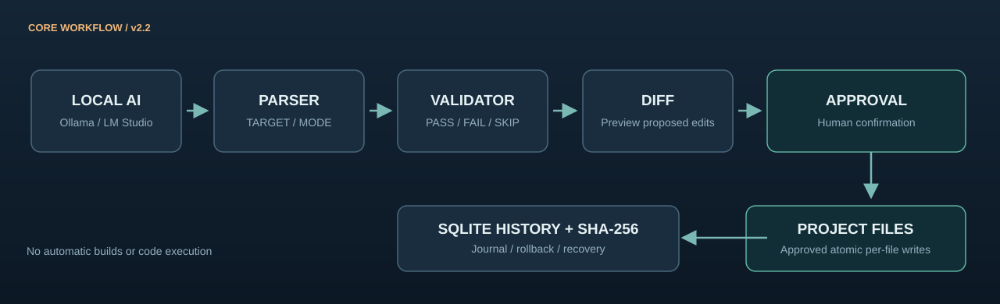
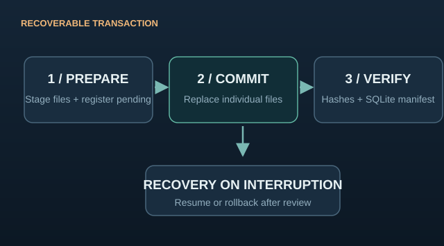
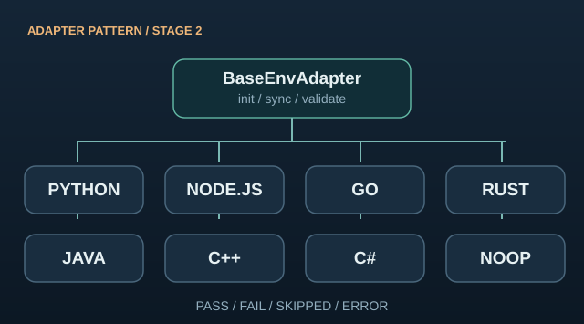

Контроль путей
Отклонение абсолютных путей, «..», симлинков и служебных папок.
OPEN SOURCE · MODEL AGNOSTIC · LOCAL FIRST
Локальная «мясорубка кода» для небольших моделей: разбирает TARGET/MODE, проверяет изменения, показывает Diff, ведёт версии SQLite и помогает восстановить проект после сбоя.
TARGET: src/hello.py MODE: CREATE ```python def greet(): print("Hello, world!") ```
01 / ARCHITECTURE
От вывода локальной модели до сохранённого проекта. Запись возможна только после проверки и подтверждения.

Отклонение абсолютных путей, «..», симлинков и служебных папок.
Чёткие статусы PASS / FAIL / SKIPPED / ERROR, без ложного успеха.
SHA-256, снимки в SQLite и журнал прерванных транзакций.
Python, Node.js, Go, Rust, Java, C++, C# и NoOp.
02 / QUICK START
Ниже — действующие команды CLI v2.2. Веб-интерфейс пока разрабатывается и здесь показан только как макет.
git clone https://github.com/musikfed/Code-Grinder.git cd Code-Grinder
uv sync uv run pytest -q
uv run python main.py init \ --name my_project \ --language python \ --architecture Minimal \ --directory .
03 / TARGET · MODE
Модель выдаёт явно обозначенный файл и режим. Несколько блоков могут составлять одну восстанавливаемую транзакцию.
TARGET: src/hello.py
MODE: CREATE
```python
print("Hello from Code Grinder!")
```

04 / UI CONCEPT
Это визуальные макеты следующего этапа разработки, а не снимки работающего FastAPI. Они показывают предполагаемый сценарий пользователя.


05 / INTERACTIVE CONCEPT
Интерактивная демонстрация в браузере. Никакой записи на диск, реальной проверки синтаксиса или вызова API — только сценарий макета.
06 / 8 LANGUAGES
Подготовлены отдельные руководства с примерами CLI, комментариями к протоколу и ограничениями текущей версии.
PEGINELAB / OPEN SOURCE
Исходный код, тесты и документация — в GitHub. Эта страница не изменяет главный сайт и не работает с локальными файлами.